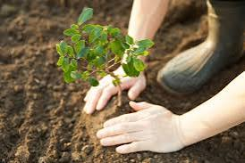

Reflorestamento
A extração ilegal de madeira da Mata Atlântica persiste como um problema significativo no Brasil, afetando não apenas o meio ambiente, mas também a sociedade em geral. Embora frequentemente discutidos os impactos ambientais, os aspectos sociais e econômicos muitas vezes são negligenciados. Muitas pessoas dependem indiretamente das atividades madeireiras para sua subsistência, o que destaca a complexidade dessa questão. A extração ilegal de madeira resulta em danos ambientais graves, incluindo desmatamento e degradação ambiental. Isso não apenas reduz a biodiversidade, mas também afeta o ciclo hidrológico e contribui para o desequilíbrio ambiental. Além disso, a extração ilegal promove a exploração de trabalhadores, muitas vezes resultando em condições de trabalho semelhantes à escravidão. A falsificação de documentos e a prática de crimes são comuns, minando os esforços de controle e fiscalização.
O desmatamento também causa mudanças geográficas significativas, levando à desertificação de áreas anteriormente densamente florestadas. Isso afeta não apenas o meio ambiente, mas também a sociedade, causando impactos sociais, econômicos e culturais. Diante desse cenário, surgem programas como o "Programa Reflorestar", que busca promover o reflorestamento e a conservação da Mata Atlântica. Baseado no Pagamento por Serviços Ambientais (PSA), o programa oferece incentivos financeiros aos produtores rurais para a manutenção e recuperação dos serviços ambientais.
O "Programa Reflorestar" não apenas beneficia os produtores rurais, promovendo um retorno financeiro e melhorando a qualidade do solo, mas também contribui para a conservação da biodiversidade e o desenvolvimento sustentável. Ao investir na preservação ambiental, o programa visa melhorar a qualidade de vida da população e promover um futuro mais sustentável para o Estado do Espírito Santo e para o Brasil como um todo.